almost immediately assimilated and restore consciousness and strength.
Honey is probably the most valuable single natural food for an emergency ration, and certainly the best “energy-giver” for walkers and climbers, except for glucose and proprietary products of a kindred nature.
In addition to the bees, certain species of ants store honey in their bodies, and have marked food value, and the wood grub (the
“witchetty grub” of the blacks) is a delicacy when toasted, if one can overcome a natural prejudice. This is simply a matter of mental conditioning.
VEGETABLE FOODS
GRAS S ES, FERNS AND HERBAGE
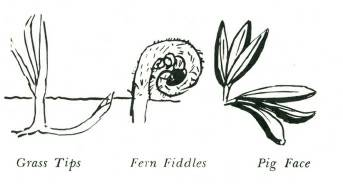
GRASS TIPS
The young whitish tips of all grasses are edible, and most are very palatable and tender. They can be eaten raw, and have a’
considerable food value. This applies to bamboo, which is botanically a giant grass. The seeds of all grasses are edible, and a valuable protein source. '
FERNS
The young fiddles of many of the ferns are regarded as edible, but only a few are palatable, and many have a tendency to “scour.”
Bracken tips are edible, but are not recommended for food by this writer.
HERBAGE
Leaves of many forms of herbage are edible and very palatable.
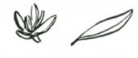

The plants specially recommended are Tetragonia. sometimes called New Zealand spinach, and sometimes miscalled “saltbush.”
This plant grows all along the sub-tropical coastal areas. It may be recognised by its light-green, slightly fleshy leaves (petiole in shape, that is, similar to an ivy leaf), and small yellow flowers.
Tetragonia may be eaten raw or boiled. It is very palatable and has fair food value.
Pig Face
Pig Weed
PIG FACE (Mesembryanthemum)
These are all edible raw and most have a high moisture content and a tendency to act as a mild purgative. Food value is low, but they could sustain life. Baked, they are good food.
PIG WEED
This is edible and good food.
WATERCRESS
This grows in most of the fresh water courses, along the edge of streams. It makes an excellent salad eaten raw, has a slightly
“hot” taste, and when freshly picked is crisp and nourishing. A word of warning. This plant may harbour one of the freshwater snails, which is host to some of the flukes or parasitic worms. Do not take a chance; wash the leaves thoroughly before eating.
STINGING NETTLES
These are edible and very palatable, but, of course, they cannot be eaten raw. Boil for ten minutes before serving. Nettles are grown in gardens in France for food. They must be picked with gloves on, and if gloves are not available, pull a sock over one hand and so protect your skin from the poison spines.
Do not confuse these ground nettles with the Nettle Trees or
Stinging Trees of tropical areas.

FRUITS, LEAVES AND ROOTS
There are two fairly common poisons in the vegetable world.
Fortunately, both are easily identified by taste.
One has the taste of a bitter almond or a peach leaf.
This is hydrocyanic or prussic acid, a potent and highly dangerous poison which is often water soluble. When you find this taste in a plant, whether leaf, root, seed or fruit, suspect the plant as a source of food in the raw state, unless you know it is safe to eat.
If this poison is present, try boiling some of the plant, and then taste after boiling. If the “almond” taste is no longer noticeable, then you may regard the plant as probably safe to eat after boiling.
It is unwise to eat a large meal of the plant after this test. It is far safer to eat a small portion, and then wait a half hour. If there are no signs of stomach ache, vomiting or sickness, then you can be quite certain that the food is now safe.
The symptoms are stomach pains, nausea, and vomiting.
Poisoning can be serious. Antidotes would be alkalis such as milk or soda (the white ash from a fire is soda ash and would serve as an antidote if mixed with water).
The other poison is recognised by a sharp stinging, burning or hot sensation caused by tiny barbs irritating the tongue, throat, lips and palate. This poison, for example, is found in the stalk of the arum lily. It is an oxylate of lime crystal. It can be exceedingly painful, causing swelling of the tongue, throat and lips. In general, oxylate of lime crystals are not water soluble.
If this poison is detected in a test tasting of a plant, reject the plant out of hand. The poison cannot be removed, and the plant is not edible.
BITTERNESS OR EXTREM E ACIDITY
Avoid any plant which is bitter or very acid or very 'hot’. The

unpleasant taste is a certain danger signal.
RED IS A DANGER SIGN
The colour RED associated with a plant in tropical or subtropical areas can be regarded as a danger signal. Any plant which shows red in any part of its growth, in its fruits, in its leaves, or in its stalks should be regarded with suspicion unless you know for certain that it is absolutely safe.
For example, the strawberry (an alpine fruit originally) is known to be safe to the general run of people, but some unfortunate folk are very sick if they eat strawberries.
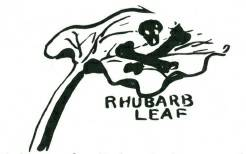
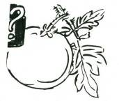
Rhubarb has a red stalk, but the leaves are deadly when cooked because they contain a fatal quantity of oxalic acid.
The tomato belongs to the solanum family, the same family of plants as the deadly nightshade. So, in a general way, be suspicious of any plant which shows the danger signal red, unless you are absolutely certain that it is safe to eat. This is particularly
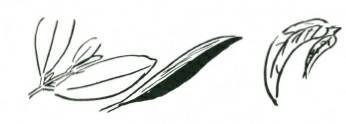
applicable to tropical berries and fruits.
Another general sign of probable poison is any fruit which is divided into five divisions. This is a generalisation, but it is better to be cautious than overbold–and poisoned.
LEAVES
The leaves of many trees, shrubs and ground plants are edible, and very palatable, and can comfortably sustain life.
The only test is to taste the leaf. If it is tender and pleasant to the palate and the danger tastes of almond, bitter, or extreme acid are
not present, then you can eat a small quantity, and if there are no ill-consequences, then the leaves of that particular tree or shrub are safe and will be good food for you.
The leaves of most plants contain oil cells which give the leaf its taste or flavour. This is generally more marked in the young leaves at the end of branchlets.
Beware of all trees which have a coloured sap, white, red or black. M any of these saps are a danger signal, and some, particularly the white saps, can inflict painful burns to the skin or, if allowed in the eye, can cause blindness. Also beware of the ground trefoils, particularly those which have little corms or tubers. These are generally Oxalis, and have a dangerously high content of oxalic acid.
FUNGI
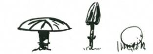
All forms of fungus growth should be avoided. The food value is negligible, and unless you know for certain that a particular fungus is safe to eat, do not touch it. The fungus plants contain poisons which affect the nerves by causing paralysis. M any are extremely dangerous and to date very little is known of them. The author has had some small experimenting in this field and found a few, apart from the common “mushroom,” which are very palatable and quite safe. One of the best of these is the puffball in its very early stage of growth before the ball itself has dried and become puffy.
The writer’s advice is: “Leave all the fungus growth severely alone.”
ARCTIC BERRIES
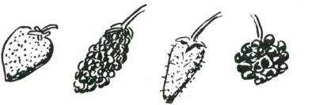
In the cold climates most berries are edible. This is in contrast with tropical and sub-tropical areas, where berries generally should be regarded as probably poisonous. In tropical areas the colour red is always a danger signal, and a good rule is to avoid all red berries.
This does not apply in the colder climates, where almost all red berries are edible. Poisons are liable to be present in berries and this general rule should be observed in regard to all unknown berries.
S EEDS AND NUTS
A few seeds contain deadly poisons, and these poisons may not always be detected by the palate. In general, a bitter, strongly acid, or burning “hot” taste is a sign of poisonous contents. Any seeds with these tastes should be avoided. The mere act of tasting will not affect you. The poison may be tasted but must not be swallowed. When you are testing seeds to see if they are edible, you can spit out the portion you have tasted if it is unpalatable, and there will be no ill-effects.
Nuts, of course, are seeds, but for this work have been separated into a different section. M any nuts contain hydrocyanic
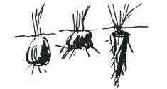
acid poison. This is always detected by the palate, and in nearly all instances where it occurs it can be dissolved by either boiling or soaking in water for 10 to 12 hours. Other nuts, such as the candle nut–a relative of the tung nut–are violent purgatives. Again, cooking either by boiling or baking may render them harmless.
Unless you know for certain that the nuts are safe to eat, regard them with some suspicion and test by first tasting, and if taste indicates no poison, then eat a small quantity. If there are no illeffects within an hour, the nut will be safe.
ROOTS AND TUBERS
M ost of the roots and tubers are safe, but almost all must be either boiled or heat treated in some way before they are digestible.
The common potato is almost valueless as a food unless cooked.
Yams are not a particular species of plant. The word “yam”
simply means the root of a ground vine. The sweet potato is a yam. They are a prolific source of food among people in tropical and sub-tropical regions. There are many vines which have these ground tubers, and, as far as is known, all such tubers are edible if free from the oxylate of lime crystals. In most yams the hydrocyanic poison is water soluble. Although the botanical genus of these tuber-yielding plants will vary greatly, there is one factor in common in the veining system of the leaf. This must not be taken as a hard and fast rule, but it is a very good guiding principle.
If the leaf shows that the veins radiate from the point of juncture of the leaf with the stalk, rather than from a main vein, then there may be tubers to be dug from the species of plant.
The tubers and bulbs of many plants are edible, and the simple test of tasting for hydrocyanic acid or oxylates of lime crystal can be applied to all with a fair degree of reliability.
remember that your own body normally provides you with the safeguards. First is the sight of your food.
If it looks healthy and clean, it may be all right. The sense of smell is your next safeguard. If the food smells all right, you apply the next safeguard and taste it. If the taste is all right, the food probably is safe.
The principle of edible foods is as simple as that.
remember to be careful with nuts and seeds; to regard red as a danger signal; and to avoid the fungi. If you remember these three rules you will undoubtedly be quite safe in testing and eating most plants which are palatable.
WATER
Associated directly with food is water. These two are essential to life. Just as there is the problem of finding food in the bush, so too is there the problem of finding water, and many explorers and backwoodsmen died because they did not know how or where to look for water in apparently dry and arid regions.
M any different forms of life are certain indicators of water in the near vicinity. The bees must have water. The mason fly, that big yellow and black hornet-like creature, requires mud and water for the tunnel wherein he stores the spider he has paralysed.
Pigeons and all grain eaters need water, but the flesh-eaters such as the crow and the hawks and eagles can go without water for long periods. By knowing something of the nature of the insects, birds, animals and reptiles you can often find their hidden stores of precious water. (See Chapter 7.)
INS ECT INDICATORS OF WATER
BEES
Bees in an area are a certain sign of water. Rarely will you find a hive of wild bees more than three or four miles from fresh water.
A bee flies a mile in 12 minutes. You can be sure that if you see bees you are not far from fresh water, but you will probably have to look for further indications before you actually find the water supply.

ANTS
M any of the ants require water, and if you see a steady column of small black ants climbing a tree trunk and disappearing into a hole in a crotch it is highly probable that there will be a hidden reservoir of fresh water stored away there. This can be proved by dipping a long straw or thin thick down the hole into which the ants are going. Obviously if it is wet when you draw it out there is water there. To get the water do not on any account chop into the tree. If the hole is only very small, enlarge it with your knife-point at the top. M ake a mop by tying grass or rag to a stick. Dip the mop into the water and squeeze into a pannikin. Another method is to take a long hollow straw and suck the water you require from the reservoir. These natural tree reservoirs are very common in dry areas, and are often kept full by the dew which, condensing on the upper branches of the tree, trickles down into the crotch and so into the reservoir inside the tree. Water reservoirs are very common in the she-oaks (casuarinas) and many species of wattle.
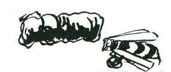
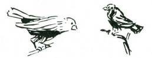
M ASON FLIES
These large, hornet-like creatures are a certain indicator of water. If you see a mason fly’s buildings in an area you can be sure that you are within a few hundred yards of a soak of wet earth.
Search around carefully and you will see the mason fly hover and then suddenly drop to the ground. If you examine the place where she landed you will find the soil is moist, and that she is busy rolling a tiny pellet of mud for her building. By digging down a few inches (or at most, a couple of feet) you will assuredly find a spring and clear, fresh, drinkable water.

BIRD INDICATORS
FINCHES
All the finches are grain-eaters and water-drinkers. In the dry belts you may see a colony of finches and you can be certain that you are near water, probably a hidden spring or permanent soak.
WILD PIGEONS
Wild pigeons are a reliable indicator of water. Being grain and seed eaters they spend the day out on the plains feeding, and then, with the approach of dusk, make for a waterhole, drink their fill, and fly slowly back to their nesting places.
Their manner of flight tells the experienced bushman the direction of their water supply. If they are flying low and swift they are flying to water, but if their flight is from tree to tree and slow, they are returning from drinking. Being heavy with water, they are vulnerable to birds of prey. It is obvious then that the direction of water can be discovered by observing the pigeons’
manner of flight.
GRAIN EATERS
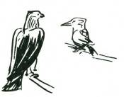
All the grain eaters and most of the ground feeders require water, so that if you see their tracks on the ground you can be reasonably certain that there is water within a few miles of your location. An exception to this are parrots and cockatoos, which are not regarded as reliable indicators of water.
The carnivores, being flesh eaters, get most of the moisture they require from the flesh of their prey, and consequently are not reliable water-drinkers. Therefore, do not regard the presence of flesh-eating birds as an indicator of water in the area, nor should you regard the water living birds as indicators of fresh or drinkable water.
MAMMALS

Nearly all mammals require water at regular intervals to keep themselves alive. Even the flesh eaters must drink, but animals can travel long distances between drinks, and therefore, unless there is a regular trail you cannot be confident of finding water where you see animals’ trails. This is a general rule. However, certain animals never travel far from water. For example, a fresh track of a wild pig is one sign that there is water in the vicinity, also the fresh track of
'roos-and most of the grazing animals, whose habit it is to drink regularly at dawn or dusk. In general, water will be found by following these trails downhill.
REPTILES
M ost of the land-living reptiles are independent, to a very large extent, on water. They get what they require from dew and the flesh of their prey, and as a result are not an indicator of water in the area.
WATER FROM VEGETABLE S OURCES

The roots and branches of many trees contain sufficient freeflowing fluid to relieve thirst, and this can be collected by breaking into 3 ft. lengths the roots or branches and standing these in a trough (of bark) into which the collected fluid will drain to the pannikin. In some plants the amount of water stored is truly unbelievable, the fluid literally gushing out when the plant is cut.

These vegetable “drinking waters” cannot be kept for more than twenty-four hours. The fluid starts to ferment or go bad if stored, and might be dangerous to drink if in this condition.
The nature of the plant, if judged by the properties of its foliage, is no guide to the drinkability of the fluids which are its sap. For example, the eucalypts, whose leaves are heavily impregnated with oils of eucalyptus, and in many cases poisonous to human beings, contain a drinkable fluid, easily collected (from the branches or roots). This fluid is entirely free from the essential oils and with no taint of the eucalyptus.
The lianas or monkey ropes found in tropical areas are an example of a prolific source of water.
There are certain precautions, and a few danger signs, with regard to vegetable fluids. If the fluid is milky or coloured in any way, it should be regarded as dangerous, not only to drink but also to the skin. M any of the milky saps, except those of the ficus family, which contain latex, or a natural rubber, are extremely poisonous. The milky sap of many weeds can poison the skin and form bad sores, and if allowed to get into the eye may cause blindness and severe pain.
With all vegetable sources of fluid even though the water itself is clear, taste it first and, if quite, or almost, flavourless, it is safe to drink.
For vegetable sources of water in arid areas the best volume is generally obtained by scratching up the surface roots. They are discovered close to the ground, and if cut close to the tree, may be lifted and pulled, each root yielding a length of from ten to twenty feet. These must be cut into shorter lengths for draining.
M any people who have tried to obtain drinking water from vegetable sources failed to get the precious liquid to flow because they did not break or cut the stalk or root into lengths. Unless these breaks are made, the fluid cannot flow, and the conclusion is that the root, branch or vine is without moisture.
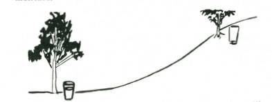
In general, water is more plentiful from plants in gullies than on ridges, and the flow is wasted if the roots are broken into sections and not cut. Cutting tends to bruise and seal the capillary channels.
DEW COLLECTION
In barren areas where there are no trees, it may be possible to collect sufficient moisture from the grass in the form of dew, to preserve life. One of the easiest ways of dew collection is to tie rags or tufts of fine grass round the ankles and walk through the herbage before the sun has risen, saueezing the moisture collected by the tufts or rags into a container. M any early explorers saved their lives by this simple expedient.
Pig Face (Mesembryanthemum) and Ice Plant (Parakylia) and
Pig Weed contain large proportions of drinkable moisture.
WATER ON THE S EA COAS T
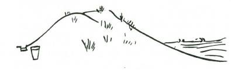
Fresh water can always be found along the sea coast by digging behind the wind-blown sandhills which back most ocean beaches.
These sandhills trap rain water, and it floats on top of the heavier salt water which filters in from the ocean. Sandhill wells must be only deep enough to uncover the top inch or two of water. If dug deeper, salt water will be encountered and the water from the well may be brackish and undrinkable. It will be noticed, too, that the water in these wells rises and falls slightly with the tides.
These sand wells are a completely reliable source of water all over the world. When digging it is necessary to revet the sides with brushwood, otherwise the sand will fall into the well.

On coastal areas where cliffs fall into a sea a careful search along the lower edges of the cliff will generally disclose soaks or small springs. These in general follow a fault in the rock formation and frequently are evident by a lush growth of ferns and mosses.
MOIS TURE FROM FIS H FLES H
Another source of liquid sufficient to sustain life at sea, when fresh water has ceased to be available, is from the flesh of fish. The fish are diced, and the small portions of flesh placed in a piece of cotton cloth and the moisture wrung out. This moisture from sea fish is not in itself excessively salty, and can sustain life for a long period.
CONDENS ING S ALT WATER
It is possible to condense sea water without equipment and obtain sufficient fresh water for drinking purposes. (See moisture condensation overleaf.)

A coolamon is made, or alternatively a hole is scraped in the ground and lined, and the salt water is put into this hole. A fire is built, and stones are put in the fire to heat. These when hot are put in the salt water, which soon boils, and the water vapour is soaked up by a towel or thick mat of cloth. In time, this will literally become saturated, and may be wrung out, yielding a fair quantity of fresh drinkable water. Once the cloth is damp and cool, the collection of water vapour is fairly rapid.
MOIS TURE CONDENS ATION IN ARID AREAS
A simple still for water condensation in arid areas can be made from a piece of light plastic sheeting, about 4 ft. square.
A hole is dug or scooped in the ground in a sunny position.
The hole should be about 3 ft. across and 15” to 18” deep or deeper if possible.
The site should preferably be in moist ground, a depression in a creek bed is ideal if one can be found. If green material such as shrubs or succulent herbage is in the vicinity, the hole should be lined with this and the material packed down. It may be necessary to weigh the material down with a few flat stones.
In the centre of the hole, and in the deepest part, a billy or container is placed to catch the moisture collected by condensation.
Lay the sheet of plastic to cover the top of the hole, and weigh the edges with stones and use some of the earth scooped from the hole to seal the edges lightly. Place a stone in the centre of the upper side of the plastic sheet above the approximate centre of the water container to weigh it down to just over the container.
M oisture in the soil, and in the greenery placed in the hole will be drawn off by the heat of the sun and condense on the underside of the plastic. Condensation results because the air above the plastic is considerably cooler than the air on the underside of the plastic. The condensed moisture will collect into droplets, coalesce and trickle down the underside to the lowest point where it drops off into the container.
If the underside of the plastic sheet is slightly roughened with fine sandpaper or a similar fine abrasive such as a piece of finely grained stone, the droplets will coalesce and run off more cleanly than if the underside is absolutely smooth. Body waste, such as urine, waste food, moist tea leaves, etc., can be put in the hole. The pure moisture only is condensed. From one to four or five pints of water a day can be collected by this method. If the stay in the area is likely to be of some duration the top few inches of the hole can be removed and fresh green material replaced and the still will continue to work when this is done. Fresh still sites may be

necessary every second or third day.
Acknowledgement: This effective method was first evolved by the
Water Conservation Laboratory in Arizona.
S TAGNANT WATER
Stagnant water, or water which has become polluted, can be made drinkable and pure without equipment.
If time permits, such water can be filtered through a sieve of charcoal.
This will both clarify and to a large extent purify the water, but it is always safer to boil it before drinking.

If the water is muddy, the clay particles in flotation in the water can be precipitated by a pinch of alum, which will flocculate and precipitate the particles and so clarify the water. This, however, requires at least 12 hours’ wait.
If no artificial means are available, the polluted or dirty water can be filtered by straining through closely woven garments such as a felt hat or a pair of thick drill trousers. The water, if polluted, can be sterilised by adding hot stones to the water in the filter. The water will soon boil and so made sterile and safe for drinking.

In areas where there is a likelihood of water being infected with bacteria, it is always advisable to boil before drinking or, failing this, to chlorinate the water with a pinch of chloride of lime.
CHAPTER 5
FIRE MAKING
The ability to obtain fire is essential in the bush. Fire can provide warmth, comfort, and protection. It is essential for the preparation of food, because heat in one form or another chemically affects the cells of plant foods, making some yield their nourishment, and others release their toxic elements.
Fire enables man to cook flesh and also to preserve it by smoking or drying. Fire is essential to make polluted water safe and drinkable.
The ability to obtain fire under any conditions, provided that combustible material is available, is one of the first essentials in out-of-door living.
The confidence which follows when one masters the skill of lighting fire with no equipment is remarkable.
M aking fire by friction and other means is not easy, but when the skill has been mastered, the person acquiring the skill acquires greater knowledge of himself and greater confidence in his ability to overcome obstacles, both valuable characteristics in all avenues of life.
The ability to make fire under almost any condition is essential to the backwoodsman.
It may be important, too, that you know how to make fire that is almost smokeless, or fire that gives little or no flame. In war these two conditions can be of the greatest importance. It is also important to know how to make fire for signals, so that if you are lost, rescuers can be guided to you, and, of course you need fire to cook your food, fire to warm you, and fire to protect you.
THE CORRECT WAY TO LIGHT A FIRE WITH MATCHES
Even if you possess matches, lighting a fire in the bush may not be easy. The wood may be damp, it may be raining heavily, or there may be none of the usual aids, such as paper or kerosene.
Therefore it is a good thing to learn how to light your fire with certainty under any condition.
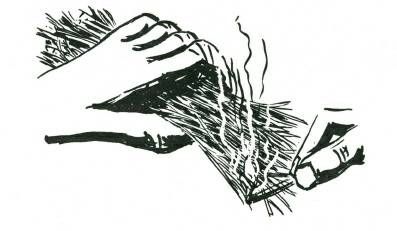
Unless the weather is very dry, and has been so for days on end, do not collect your kindling wood from the ground. It will certainly be damp, and in the morning, after heavy dew, wood picked from the ground will be far too wet to light. Acquire the habit of collecting the thin dead twigs, no thicker than a match, which you will find on almost every bush. Gather a big handful of these, and to start your fire hold the bundle in your hand, and apply the flame of your match to the twigs at the end farthest from your hand. They will catch fire easily, and you can turn the bundle in your hand until they are all well alight. Then lay the blazing bundle of twigs in your fireplace and proceed to feed other small twigs on top, gradually increasing the size until your fire is built to adequate proportions.
There will be occasions during very heavy rain when even the twigs are too sodden to catch alight easily. Then you must take a thick piece of wood, preferably from a branch which has not been lying on the ground, and with your knife, machete or tomahawk, split off the wet outer layer until only the dry wood inside remains. Shave this down in curls all round the sticks and make four to six such fire sticks. Hold these fire sticks by the butts in one hand and light the other end with your match. The dry curls will catch immediately, and the heat they generate in burning will be sufficient to during heavy rain you can light your fire with one match. In strong wind or during very heavy rain take your twigs, or fire sticks, inside your tent, and light them in the shelter so provided. Use your billy, carried on its side, to take the burning sticks to your fireplace.
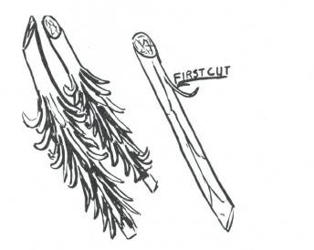
These fire sticks, shaved from the inner wood dry after heavy rain, will take flame immediately. Four to six will start a fire for you.
FIRE WITHOUT S MOKE, AND FIRE WITHOUT FLAME
As outlined in the first paragraph, there may be occasions when you desire to have fire without disclosing your position either through smoke or flame.
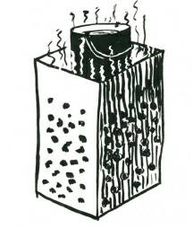
Smoke is the result of incomplete combustion, and therefore by ensuring that combustion is quickly completed the fire will be nearly all flame, with practically no smoke. This is achieved by feeding the fire with small dry twigs which catch alight almost instantly. By feeding the fire continuously with twigs 1/8 inch thick there will be no 'tell-tale’ blue smoke haze. If possible light your smokeless fire under a tree (but not against the trunk); the leaves and branches will completely disperse what tiny amount of smoke is given off by the burning twigs.
Fire without flame calls for the lighting of a small flame fire in the beginning, and then this is fed with charcoal, previously gathered from half-burnt stumps. It may be necessary to fan this continuously if there is no breeze. A charcoal fire needs a lot of air and, though it requires flame for starting, it will burn and give out great heat with a total absence of flame when well alight. An old kerosene tin or 4-gallon drum, pierced to allow plenty of air holes, makes a good brazier for a charcoal fire. By its use there is no visible flame. If a tin is not available, build a stone surround to your fireplace to hide the glow of your charcoal fire.
LIGHTING TWO FIRES WITH ONE MATCH AT DIFFERENT TIMES
To light two fires at different intervals of time with one match may appear to be impossible. But suppose you split one match?
You then have two! and therein lies the secret of lighting two different fires with one match. There is a knack in splitting the match, be its stalk of wood, paper, or waxed fibre. There is also a knack in striking the split halves so that they will light, and there is also a knack in lighting your fire when the split match is aflame.
To split wooden matches, push the point of a pin or a sharp knife immediately below the head, and force down sharply–the head will split in two and the wood run off or split. You have two heads and enough wood left on one half to burn for a second or more–long enough to start tinder blazing.
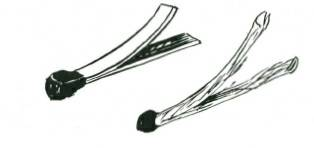
How to split a wooden match
With a paper match simply start to split the match at the end away from the head by peeling the paper towards the head. This will split the head, and so you have two matches, but each has a head on one side only.
How to split a paper match
To split a wax match. Treat a wax match similarly. Split the match from the end away from the head and up to the head. It may be necessary to use a knife to split the actual head itself.
HOW TO STRIKE A SPLIT M ATCH-DRAW M ATCH FLATLY ALONG BOX
In striking all three types of split match the 'stalk’ of the match should be held between the thumb and forefinger, with the tip of the middle finger resting lightly on the head of the match.
The match is drawn lightly and 'flat’ along the striking surface.
Immediately the head starts to burn, the forefinger which has been holding it gently down to the striking surface, is lifted and the match allowed to flame.
It requires practice to be certain that you can always split your match and strike both portions. (This splitting of matches reached a high degree of proficiency with prisoners during the war, and many men were able to split a match into six portions, and strike each one of them with certainty.)
BURNT FINGER CURE
In learning how to strike a split match you will probably get a scorched fingertip on a few occasions. The quickest relief is to grab the lobe of your ear with the burnt finger. The natural oil on your ear will seal off the small burn from the air.

How to prepare for lighting fire with a split match.
Lighting a fire with a single portion of a split match calls for extreme care in the preparation of your materials. A bundle of very thin dry twigs should be collected as for firelighting with one match, and the bundle should be loosely 'primed’ in the centre with tinders of fine dry inflammable material, teased-out dry grass, a bit of teased cotton, fine dry teased-out bark or any of a hundred natural materials will do. Do not pack your tinder tightly or put in too much or you will 'drown’ the tiny flame; just a very light priming will catch the flame quickly. When the little flame of the split match is applied to the tinder it must take the flame instantly and set fire to the thinnest of the dry twigs so that the whole bundle will soon be alight.
Lighting a fire with a split match should be practised in order to

achieve real proficiency.
KEEPING RES ERVE MATCHES DRY
Always keep a reserve of matches in your camp kit. These matches should be specially treated so that they are protected against wet. This can be done with ordinary safety matches by coating the head and stick with candle grease. Simply light a candle and drip the hot wax on the head, and rub some along the stick.
The specially treated matches are best carried in a small screw-top plastic container. The striking side of a match box can also be wrapped in cellophane and enclosed in this container with the matches. By preparing for sudden need through having this reserve of matches available you may save yourself much hardship and difficulty.
LIGHTING FIRE FROM A COAL
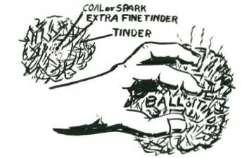
Sometimes only a small red coal may be available to start your fire and, unless you know how, you will never get the coal to catch onto tinder, and so give you flame. It is important to know therefore how to make fire from a single tiny coal, no bigger than the pinched-out spark of a cigarette.
Lighting a fire from a coal.
To light your fire from a coal, collect a bundle of dry tinder (see
'tinders,’), softly tease a large piece, and place the coal in the centre, fold the rest of the tinder over the coal, and with the tinder ball held very loosely between the widespread fingers, whirl the ball round and round at arm’s length, or, if there is a strong wind blowing, hold the ball in the air, allowing the wind to blow between the fingers. The ball will commence to smoke as the tinder catches.
When there is a dense flow of smoke blow into the ball, loosening it in your hand. These few last puffs will convert the smouldering mass to flame and you will have achieved fire from a coal. This too should be practised frequently.
FIREWOOD
Burning qualities of different woods vary greatly. Some such as pines burn with a clean bright flame and give out considerable heat.
Others char and smoke and give out little warmth.
In general all the pines burn well when dry, and most of the hardwoods are also good fuel, but there are a few species which are unsatisfactory for firewoods.
In tropical and sub-tropical areas, the soft woods of the rain forest are usually poor fuel, as are the trunks of palms, but palm leaves and stalks are good.
Trees which grow in swamp or marshland are rarely good for firewood.
The only way to know which species of wood in a locality are good fuel is to try and burn them. This will soon provide the answer.
In general, the firewood collected will be dead branches. Some of these will be on the ground, others still attached to the parent tree, or others possibly caught in shrubs beneath the tree.
It is better to collect wood from trees or shrubs, rather than wood which is actually lying on the ground. Wood picked up from the ground will usually be damp or even wet, but wood which has not lain on the ground will be comparatively dry, even in rainy weather.
For a fire for cooking, sticks half an inch to an inch in thickness are most suitable because the amount of heat can be controlled more easily.
For a fire for warmth, use thick logs. It will often be easier to burn a long log in half than to try and cut it. For these long logs, start the fire in the centre of the log, and when it burns through, the two halves will be easier to handle. For an all-night fire, occasionally pushing the two burning ends together will keep the fire burning gently, and a fair-sized log can be made to burn all night.
CUTTING FIREWOOD
The cutting of firewood into suitable lengths is always a worthwhile camp chore. Light sticks may be broken across the knee, and stacked in a pile by themselves. Heavier sticks can be broken in the same manner if they are first nicked deeply on opposite sides.
If the sticks are very thick they may be more easily broken by making deep cuts on opposite sides, and then hitting the stick down sharply on a convenient log or rock with the cut area at the point of impact. One sharp blow will generally break the wood, and you will be able to save yourself the work of cutting right through the wood.
The brittle, dead woods can usually be broken into short lengths by bringing the branch down in the above manner. Unless the wood is brittle enough to break off short it may jar your hands badly, so therefore it is advisable to try each piece lightly at first before you exert a full-strength blow.
S PLITTING FIREWOOD
Blocks of wood are most easily split either around the circular rings (the round markings which show each year’s growth), or radially, that is across the circular rings. Some woods will split easily either way. Others will be exceedingly tough.
If you try to split the wood the wrong way it will be very hard work and the wood will be 'cranky.’ Immediately you try the right way the wood will split fairly easily, unless of course it is knotty.
Trial and error is the best way to find out, and use a comparatively light blow to test the grain.